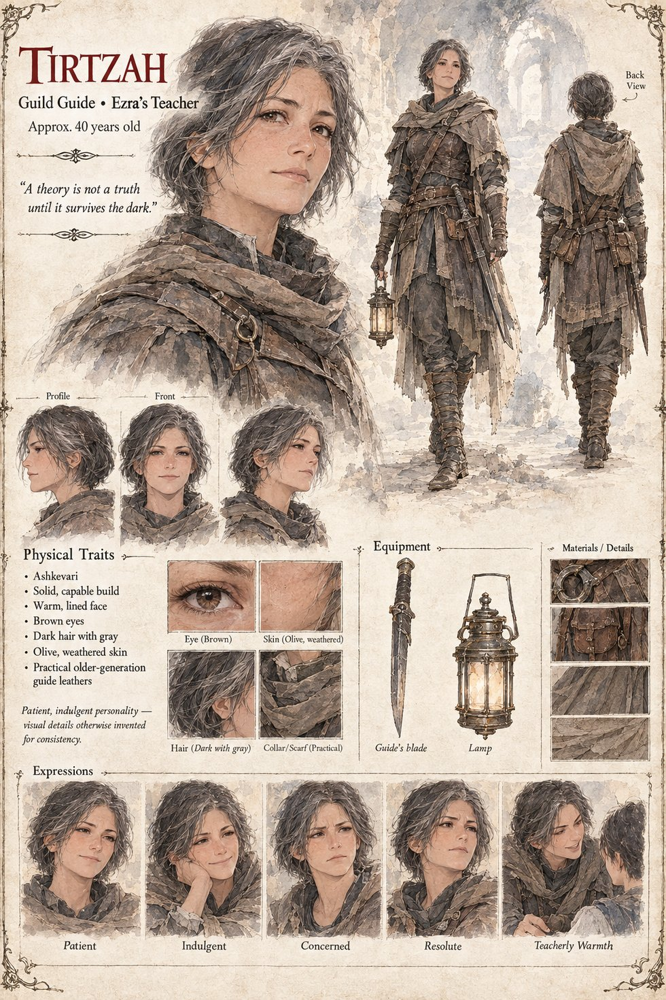

Tirtzah
Guild Guide · Ezra's Teacher · ~40 years old
A patient, indulgent guide who taught most of a generation of delvers how to read a floor before it read them — including Ezra, her most promising student. She trusts his confident new theory about crossing a guarded hall safely with twice the usual company, leads a party in herself to test it, and never surfaces again. Ezra never again publishes a theory he hasn't first tested alone, at his own risk — a caution that, decades later, keeps considerably more delvers alive than his teacher's death ever cost the guild.
“A theory is not a truth until it survives the dark.”